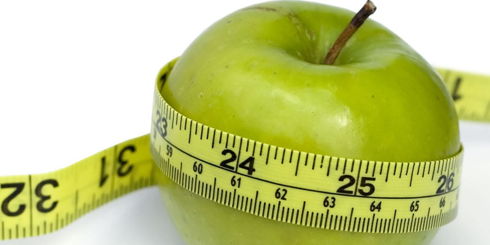
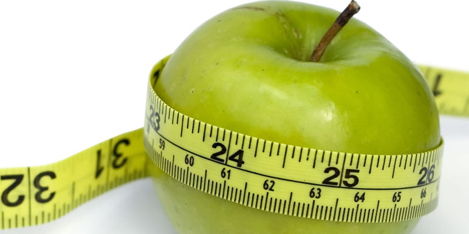

Zona
Zdravlja
MRSAVLJENJE
Mršavljenje je pojam koji se među ženskom populacijom pominje cele godine, a samo nešto više u proleće i pred sezonu godišnjih odmora. Kada su dani topli i skinete toplu garderobu i stanete pred ogledalo, verovatno ćete pomisliti da imate nekoliko kilograma viška. Ako pratite modu, primetićete da su sve manekenke mršave, što je tipičan stereotip ženske lepote. Bez celulita na butinama i zadnjici, ravnim stomakom i preplanulom kožom. Održavanje zdrave telesne težine je osnova zdravog života i recept za izbegavanje raznih bolesti. Ne treba ići u krajnjost i želeti nemoguće.
Kako mrsaviti?
Činjenice govore da je 90% žena napadnuto celulitom i da se on ne može potpuno povući. Muškarci nemaju ovakav problem jer im je strukatura vezivnih ćelija drugačije građena od žena. Ne čudi zbog toga pojava na tržištu raznih “magičnih” recepata i dijeta, kremica, čajeva i dugih preparata koji obećavaju sve, a ispunjavaju tek ponešto. Nema lakih rešenja za mršavljenje, potrebna je čvrsta volja da načinite stalnu promenu stila života. Ishrana u tome igra odlučujuću ulogu, baš kao i fizička aktivnost. Ni malo vam neće vrediti ako jedete zdravu hranu a ne krećete se, kilogrami će vam se nakupljati i tada i to baš u oblastima gde to ne treba: oko kukova, stomaka, zadnjice i butina. Ne čekajte da se ugojite previše, neka vam signal za akciju bude neprijatna brojka kada stanete na vagu ili tesne pantalone /suknja. Budite realistični u pogledu toga šta želite da postignete, koliko imate kilograma viška. Zaboravite na dijete koje ste čuli ili pročitali negde, javite se vašem nutricionisti i počnite sa dijetom napravljenom upravo prema vama. Svo to masno tkivo koje vas čini nesrećnom se samo postepeno može skidati (max. 5-7 kg mesečno) da nebi imali zdravstvenih komplikacija. Počnite da se krećete više i tako povećate sagorevanje kalorija i ojačate mišiće koji služe za sagorevanje kalorija. Recimo šetnja od 20 minuta vam može dosta pomoći. Ako već niste, fizički se aktivirajte i gledajte kako se suvišni kilogrami prosto tope
Saveti za zdravo mrsavljenje
Za koji god program mršavljenja da se odlučite, nemojte gubiti više od jednog kilograma nedeljno. Ako budete gubili više, gubićete mišiće, a ne masnoće. Izrazit pad težine tokom prve dve sedmice obično se događa zbog gubitka tečnosti; Pazite da sastav kalorija koje uzimate bude uravnotežen: oko 45% složenih ugljenih hidrata, 25% belančevina i 30% masti (s naglaskom na nezasićenim mastima); Jedini siguran način da ostvarite i zadržite zdravu telesnu težinu jeste trajna promena navika u ishrani; Brze dijete koje obećavaju veliki gubitak težine u kratkom periodu ne daje trajne rezultate. Veliki broj muškaraca i žena svakodnevno pokušava da brzo smrša, ali njih 98% brzo vrati izgubljene kilograme;
Kako ne bi ste samo smršali nego i održali težinu, sledite ova upustva:
Hranite se zdravo, dovoljnom količinom hranljivih namirnica. Ako izaberete mnogo rafinisanih namirnica (od belog brašna i šećera) koje sadrže esencijalne masne kiseline, protraćićete veliki deo kalorija koje uzimate, a vaš organizam neće dobiti dovoljno hranljivih materija;
Birajte namirnica sa mnogo vlakana, kao što su mrki pirinač, koštunčavo voće, mahunarke, semenke, voće, povrće, integralni hleb, žitarice i testenine. Vlakna daju osećanja sitosti, sprečavaju velike promene nivoa šećera i mnogo se sporije pretvaraju u mast;
Uzimajte namirnice bogate esencijalnim masnim kiselinama: plavu ribu, koštuničavo voće, semenke i integralne žitarice. One će vam ubrzati metabolizam;
Jedite pet - šest manjih obroka dnevno umesto jednog ili dva velika. Kad ogladnite, metabolizam se uspori pa sagorevate manje kalorija da bi ste očuvali energiju jer vas organizam očekuje nestašicu. To se često može sprečiti uzimanjem malih količina hrane. Kad god je moguće, jedite sveže namirnice jer su u mnogim prerađevinama uništene esencijalne masne kiseline kako bi im se produžio rok trajanja. Obično sadrže i mnogo šećera i soli. Uzimajte manjih masnih jela. To uključuje puter, margarin, punomasno mleko, pavlaku, sir i jela pripremljena od njih kao i masno meso. Radije uzimajte ribu. Piletinu, nemasno meso (uklonite svu vidljivu mast). Izbegavajte pržena jela.
 Namirnice kao što su meso, mlečni proizvodi, i integralne žitarice sadrže hrom, koji pomaže mršavljenju jer učestvuje u regulaciji oslobađanja energije u ćelijama. Fizičke vežbe. Fizička aktivnost je veoma važna za svaki program mršavljenja, i to iz više razloga. Najvažniji jeste taj što se tako sagorevaju kalorije koje bi inače taložile u obliku masti. U jednom satu vežbanja sagoreva od 200 – 400 karolija, a metabolizam ostaje ubrazan još 24-48 sati. Vežbe sa tegovima jačaju mišiće, a mišićne ćelije sagorevaju više energije, čak i kada ste neaktivni, nego ćelije masnog tkiva.. Žustra fizička aktivnost doprinosi i osećanju dobrog stanja, što povećava količinu materija koje imaju takvo dejstvo, kao što su endorfini. To vam pomaže da izbegnete prejedanje kako biste se bolje osećali. Posavetujte se sa lekarom pre svakog programa fizičkih vežbi, naročito ako ste početnik, imate zdravstvene tegobe ili ste veoma gojazni. Vežbajte četiri – pet puta nedeljno po 30 minuta. Uključite aerobne vežbe kao što su: brzo hodanje, plivanje, vožnja biciklom ili aerobik.
Mršavljenje je pojam koji se među ženskom populacijom pominje cele godine, a samo nešto više u proleće i pred sezonu godišnjih odmora. Kada su dani topli i skinete toplu garderobu i stanete pred ogledalo, verovatno ćete pomisliti da imate nekoliko kilograma viška. Ako pratite modu, primetićete da su sve manekenke mršave, što je tipičan stereotip ženske lepote. Bez celulita na butinama i zadnjici, ravnim stomakom i preplanulom kožom. Održavanje zdrave telesne težine je osnova zdravog života i recept za izbegavanje raznih bolesti. Ne treba ići u krajnjost i želeti nemoguće.
Kako mrsaviti?
Činjenice govore da je 90% žena napadnuto celulitom i da se on ne može potpuno povući. Muškarci nemaju ovakav problem jer im je strukatura vezivnih ćelija drugačije građena od žena. Ne čudi zbog toga pojava na tržištu raznih “magičnih” recepata i dijeta, kremica, čajeva i dugih preparata koji obećavaju sve, a ispunjavaju tek ponešto. Nema lakih rešenja za mršavljenje, potrebna je čvrsta volja da načinite stalnu promenu stila života. Ishrana u tome igra odlučujuću ulogu, baš kao i fizička aktivnost. Ni malo vam neće vrediti ako jedete zdravu hranu a ne krećete se, kilogrami će vam se nakupljati i tada i to baš u oblastima gde to ne treba: oko kukova, stomaka, zadnjice i butina. Ne čekajte da se ugojite previše, neka vam signal za akciju bude neprijatna brojka kada stanete na vagu ili tesne pantalone /suknja. Budite realistični u pogledu toga šta želite da postignete, koliko imate kilograma viška. Zaboravite na dijete koje ste čuli ili pročitali negde, javite se vašem nutricionisti i počnite sa dijetom napravljenom upravo prema vama. Svo to masno tkivo koje vas čini nesrećnom se samo postepeno može skidati (max. 5-7 kg mesečno) da nebi imali zdravstvenih komplikacija. Počnite da se krećete više i tako povećate sagorevanje kalorija i ojačate mišiće koji služe za sagorevanje kalorija. Recimo šetnja od 20 minuta vam može dosta pomoći. Ako već niste, fizički se aktivirajte i gledajte kako se suvišni kilogrami prosto tope
Saveti za zdravo mrsavljenje
Za koji god program mršavljenja da se odlučite, nemojte gubiti više od jednog kilograma nedeljno. Ako budete gubili više, gubićete mišiće, a ne masnoće. Izrazit pad težine tokom prve dve sedmice obično se događa zbog gubitka tečnosti; Pazite da sastav kalorija koje uzimate bude uravnotežen: oko 45% složenih ugljenih hidrata, 25% belančevina i 30% masti (s naglaskom na nezasićenim mastima); Jedini siguran način da ostvarite i zadržite zdravu telesnu težinu jeste trajna promena navika u ishrani; Brze dijete koje obećavaju veliki gubitak težine u kratkom periodu ne daje trajne rezultate. Veliki broj muškaraca i žena svakodnevno pokušava da brzo smrša, ali njih 98% brzo vrati izgubljene kilograme;
Kako ne bi ste samo smršali nego i održali težinu, sledite ova upustva:
Hranite se zdravo, dovoljnom količinom hranljivih namirnica. Ako izaberete mnogo rafinisanih namirnica (od belog brašna i šećera) koje sadrže esencijalne masne kiseline, protraćićete veliki deo kalorija koje uzimate, a vaš organizam neće dobiti dovoljno hranljivih materija;
Birajte namirnica sa mnogo vlakana, kao što su mrki pirinač, koštunčavo voće, mahunarke, semenke, voće, povrće, integralni hleb, žitarice i testenine. Vlakna daju osećanja sitosti, sprečavaju velike promene nivoa šećera i mnogo se sporije pretvaraju u mast;
Uzimajte namirnice bogate esencijalnim masnim kiselinama: plavu ribu, koštuničavo voće, semenke i integralne žitarice. One će vam ubrzati metabolizam;
Jedite pet - šest manjih obroka dnevno umesto jednog ili dva velika. Kad ogladnite, metabolizam se uspori pa sagorevate manje kalorija da bi ste očuvali energiju jer vas organizam očekuje nestašicu. To se često može sprečiti uzimanjem malih količina hrane. Kad god je moguće, jedite sveže namirnice jer su u mnogim prerađevinama uništene esencijalne masne kiseline kako bi im se produžio rok trajanja. Obično sadrže i mnogo šećera i soli. Uzimajte manjih masnih jela. To uključuje puter, margarin, punomasno mleko, pavlaku, sir i jela pripremljena od njih kao i masno meso. Radije uzimajte ribu. Piletinu, nemasno meso (uklonite svu vidljivu mast). Izbegavajte pržena jela.
 Namirnice kao što su meso, mlečni proizvodi, i integralne žitarice sadrže hrom, koji pomaže mršavljenju jer učestvuje u regulaciji oslobađanja energije u ćelijama. Fizičke vežbe. Fizička aktivnost je veoma važna za svaki program mršavljenja, i to iz više razloga. Najvažniji jeste taj što se tako sagorevaju kalorije koje bi inače taložile u obliku masti. U jednom satu vežbanja sagoreva od 200 – 400 karolija, a metabolizam ostaje ubrazan još 24-48 sati. Vežbe sa tegovima jačaju mišiće, a mišićne ćelije sagorevaju više energije, čak i kada ste neaktivni, nego ćelije masnog tkiva.. Žustra fizička aktivnost doprinosi i osećanju dobrog stanja, što povećava količinu materija koje imaju takvo dejstvo, kao što su endorfini. To vam pomaže da izbegnete prejedanje kako biste se bolje osećali. Posavetujte se sa lekarom pre svakog programa fizičkih vežbi, naročito ako ste početnik, imate zdravstvene tegobe ili ste veoma gojazni. Vežbajte četiri – pet puta nedeljno po 30 minuta. Uključite aerobne vežbe kao što su: brzo hodanje, plivanje, vožnja biciklom ili aerobik.